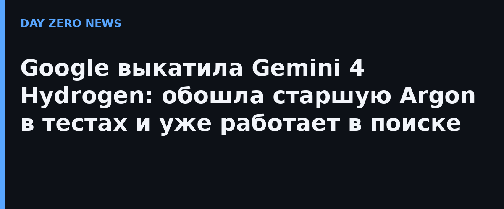

Google представила Gemini 4 Hydrogen — третью модель линейки Gemini 4 после флагманов Carbon и Argon. Если те рассчитаны на глубокое долгое рассуждение, то Hydrogen — «повседневный драйвер» для агентских задач: написать код, прогнать тесты, проверить изменения. Модель уже доступна во всех тарифах Google AI Studio, в Gemini API, бизнес-версии Gemini, приложении Gemini и подписчикам AI Pro и Ultra в Antigravity.
По Индексу интеллекта Artificial Analysis Hydrogen набирает 51 пункт на уровне рассуждения high против 50 у старшей Argon, а на максимальном режиме xhigh — 54. Цена плоская на всём окне контекста в 1 млн токенов: $1,50 за миллион входных и $7,50 за миллион выходных. против предшественницы Gemini 3.8 Flash рост заметный: задачи выполняются в 2,5 раза быстрее, результат на Terminal-Bench 4.1 вырос более чем втрое (57% против 18,2%), количество выдуманных утверждений сократилось более чем в пять раз. Партнёры на тестировании в тяжёлых корпоративных сценариях (графы, SQL, большие репозитории) наблюдали ускорение в 2–2,8 раза при экономии токенов на 12–23%.
Главная фишка — мульти-модельные рабочие процессы. В Google Antigravity появился Orchestrator, который сам переключается между моделями внутри одной сессии: Carbon принимает архитектурные решения, Hydrogen пишет и проверяет код. На Terminal-Bench 4.0 такая связка показала почти карбоновый процент решённых задач, расходуя в среднем на 24% меньше квоты и завершая работу на 19% быстрее. Carbon может выступать координатором, а Hydrogen — рабочими агентами и верификаторами в изолированных песочницах.
Одновременно Google подняла Hydrogen в основу поиска — назвав это крупнейшим апгрейдом модели в истории Поиска. Глобально, для всех: поиск лучше понимает сложные многосоставные вопросы с опечатками, веером рассылает подзапросы по нескольким темам сразу и выдаёт больше картинок, сравнительных таблиц и самособранных инструментов — на всех языках, где доступен AI Mode.